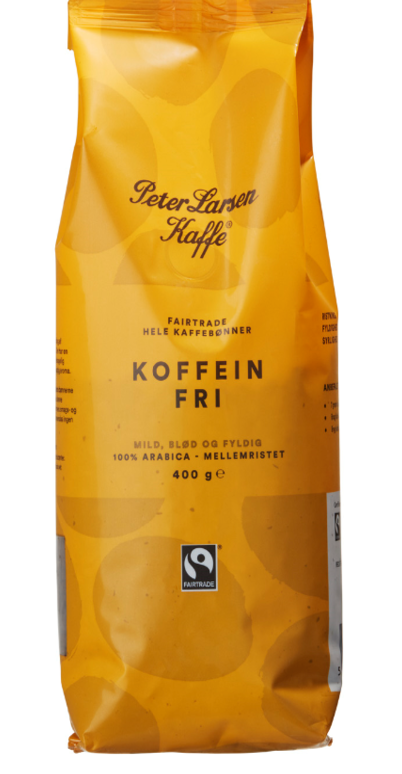

Brand
Navn og billede
Pris/kg
Fabrikant beskrivelse
Med riste dato? / holdbarhed
Ristning
Vurdering
Yellow Bird coffee
Paubrasil

80 kr og 320 kr pr kg.
Mørk chokolade – en kraftfuld, sødlig og lidt bitter note. Tørret
kirsebær – en frugtig sødme uden høj syre. Mandler – en blød, let
nøddeagtig smag i eftersmagen.
Ja - bedst før 3 mdr.
Mørkristet – det betyder, at bønnerne er ristet til en dybere farve og
karakter.
Rund, mørk smag uden at være brændt. Kasper beskriver den som let
syrlig. Kværn indstillet til 26. Vi giver den 4 ud af 5 bønner. ☕️
Yellow Bird coffee
Handege PB

135 kr og 540 kr pr kg.
Handege beskrives som en lys, frugtig og kompleks kaffe med klare noter
af: Gule bær – sødlig og solrig begyndelse. Raspberry (hindbær) – frisk
og livlig frugtighed. Gooseberry (stikkelsbær) – tangy, let syrlig
karakter. Tropiske frugtnoter i eftersmagen, samtidig med en silkeblød
krop og ren finish.
Ja, bedst 4 mdr.
Ristning: Lys til let-medium, som fremhæver kaffens naturlige frugtighed
og kompleksitet – perfekt til dem der elsker en mere udtryksfuld og
karakterfuld kaffe.
Yellow Bird coffee
Nilza

135 kr og 540 kr pr kg.
Nilza er en rund og imødekommende kaffe med en klassisk og balanceret
smagsprofil. Den åbner med en naturlig sødme af honning, efterfulgt af
bløde noter af vanilje og lys chokolade. Kaffen har lav syre, en fyldig
og behagelig krop samt en ren, let sød afslutning, der gør den nem at
drikke og velegnet til både espresso og filter. Den er ristet med fokus
på balance og sødme, så kaffens naturlige karakter træder tydeligt frem
uden at dominere.
Ja, bedst 4 mdr.
Mørkristet — velegnet til både espresso og klassisk filterkaffe
Copenhagen Roaster
Crema hele bønner

125kr og 166 kr pr. kg.
HELE BØNNER · MELLEMRISTET · ARABICA En frisk og livlig kop med flot
crema. Noter af mørk chokolade, karamel og en mild afrundet syre med
lette blåbær og citrusnuancer. ☕️
Ja
Mellemristet
Peter Larsen
Peter Larsen Koffeinfri

80 kr og 197 kr pr kg.
Koffeinfri hele kaffebønner fra Peter Larsen Kaffe består af 100%
Arabica kaffebønner fra Colombia. De koffeinfrie Fairtrade kaffebønner
giver en blød og fyldig smag med en tilpas syrlighed og en anelse
nøddeagtig aroma. Bryg en velsmagende kop kaffe og nyd den en tidlig
morgen.
Nej
Den bedste